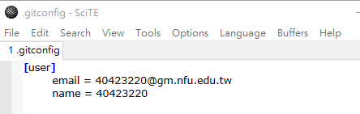
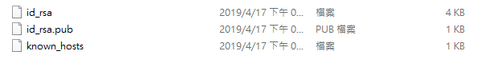

40623201
這周在上可攜程式系統中加上 ungit 和利用 ssh 與 private key 對 Github 倉儲提交推送，設定 private key 可以節省打帳號密碼的時間，雖然方便但是如果隨身碟弄丟，就要馬上將 private key 弄掉，否則撿到的人也有辦法隨意更改你的東西，還是有一些風險在。這週也開始分組的進行討論了，希望組員們都能做事，不要只想躺分，自己要對自己的學分負責，不想做事就要有被打低分的覺悟。
我將操作步驟整理在 Course content 內的 week4。
40623204
上課內容 : 這週開始進行分組製作實習事務2的手足球。上課內容是如何利用 ssh 與 private key 對 Github 倉儲提交推送設定 private key 可以節省輸入帳號密碼的時間，雖然方便但是如果隨身碟不見，必須將 private key 刪掉，否則撿到的人可以隨意更改原有東西。
40623217
這周開始分組進行討論，從這周開始到學期中必須要做出立體模擬手控足球台，在我看來，除了繪圖、vrep、網站維護、報告、翻譯電子書摘要，目前我只能想到這些能執行的任務，可是以一個組來說，真正的做到的是每個人都必須找到自己能做到的，因為這不只是分數這麼簡單，更主要的是必須明白自己是否有學習並得知當前該有的以及自身不足的，不管人到那裡總能遇到比自己強的人，可以我的觀點這是給自己的警惕，假設自己不求目標的努力或是漫無目的，那只是行屍走肉。
40623223
ungit除了介面比較好看之外好像沒什麼較為突出的優點耶,用了之後發現不習慣之外還很lag,放著一段時間後還會跳掉重讀,看來還是用以前的推送方式較為實在
還有分組後現在還沒有明確的工作,不知道現在要幹嘛,其他人好像都很忙沒空理我,該怎麼說呢,就是有點坐不住的焦躁感
40623229
這週分組完組員們開始討論，然後老師給我們一個方向，必須去弄出立體手控足球台，一個立體的足球台需要的是很多的步驟，以及一步一步地進行，因此要在每一個禮拜完成一些進度才有能做的完。
40623232
開始分組 ~ ，分好組討論，並分配任務執行，還有互評機制，防止不做事的人偷懶躺分
40623242
這週開始分組進行討論，從現在開始到學期中必須要做出立體模擬手控足球台，在看完老師的解釋，不只單純的繪圖、網站維護、報告、翻譯電子書摘要，最重要的是V-rep想到這些執行的任務就覺得頭痛，可是以一個組來說，每個人都必須了解自己能做的有甚麼，更重要的是每個人都必須長是新的東西，因為這不只是分數這麼簡單，更主要的是必須明白自己是否有學習到該學的東西，並了解當前自身不足的地方，不管人到那裡總能遇到有其他領域比我強的人，但我也不是省油的燈，這是給自己繼續學習的動力，假設自己不求目標或是漫無目的過一天是一天，那只是無意義的過。
40623243
這週開始分組討論，必須分組完成手足球的模擬，從畫圖，維護網誌，還有最困難的V-rep模擬，就是將以前自己玩別人完成的，現在要自己用程式做出來，就沒那麼容易了，包括各種小細節，得分，碰撞力道，方向等等，這週還有補充一些上一週的ungit的內容，以及解決一些修改上的問題
40623244
這週老師講解一下分組所要做的任務是什麼，其為手足球系統，簡而言之，就是將實體在玩的遊戲，變成可遊玩的程式遊戲，雖然看起來很好玩，但是要做成可以玩的遊戲，就不容易了，講解任務後，又補充上週kungit的一些東西，也幫有問題的同學想辦法解決。
40623248
40423220
這週老師公布了任務是建立一個模擬手足球台,但是這非常複雜需要小組分工才能順利完成,並且還教了如何使用ssh與private key的配置進行對github提交推送。

